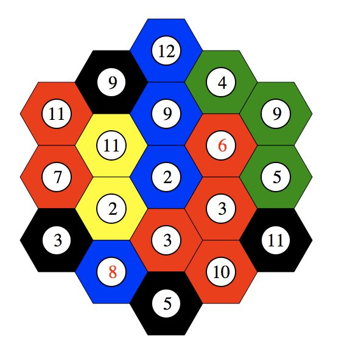
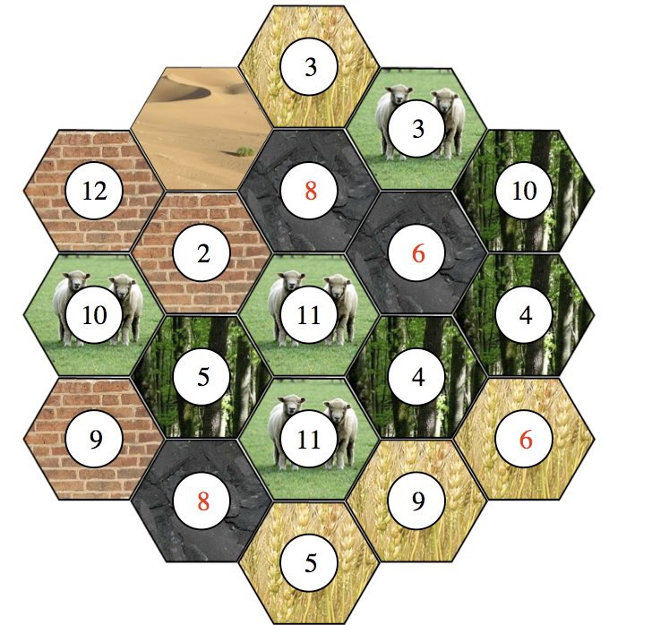
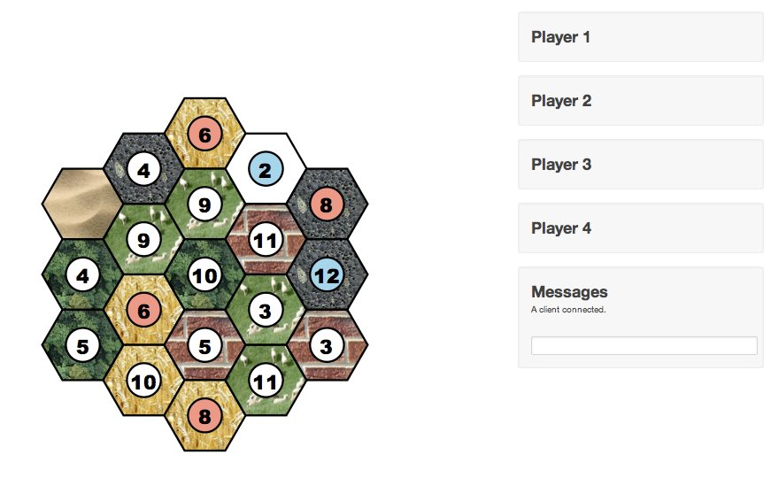
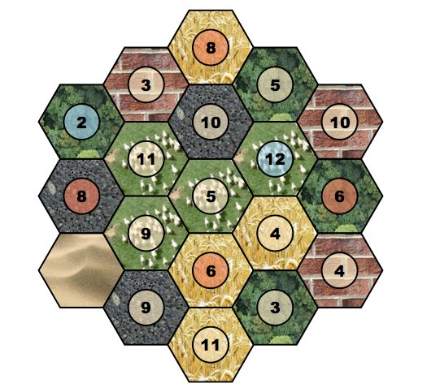
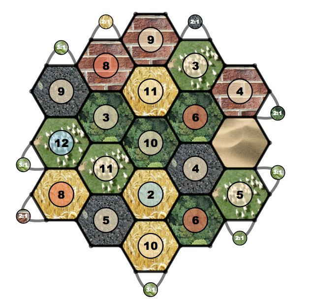
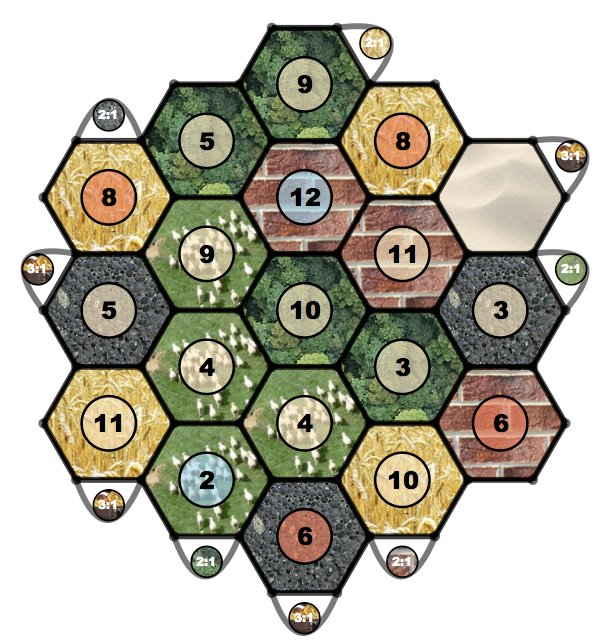
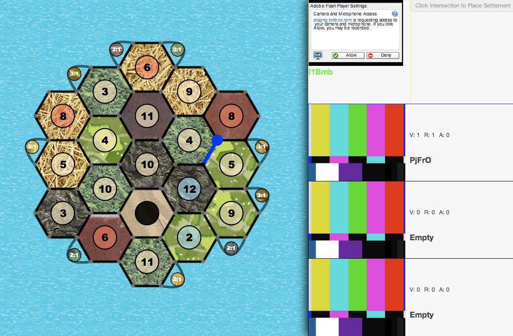
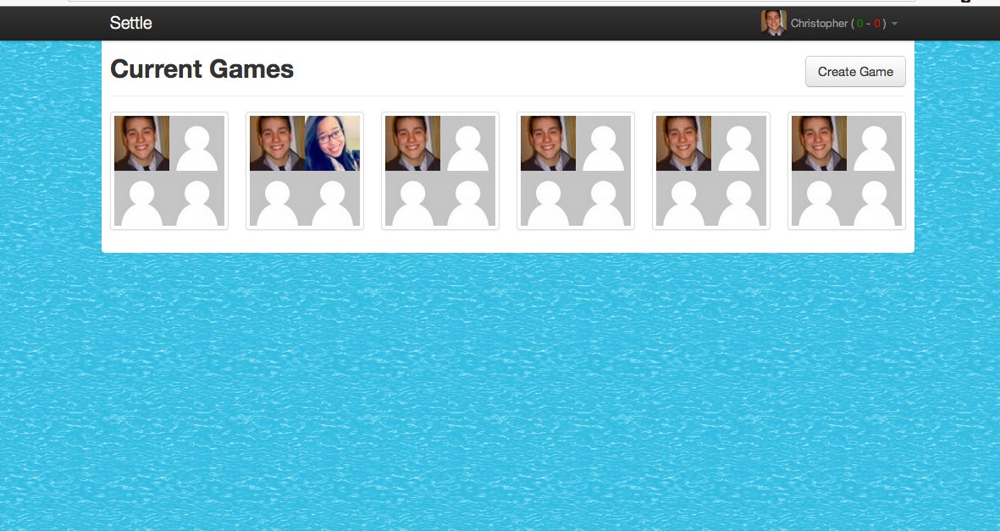
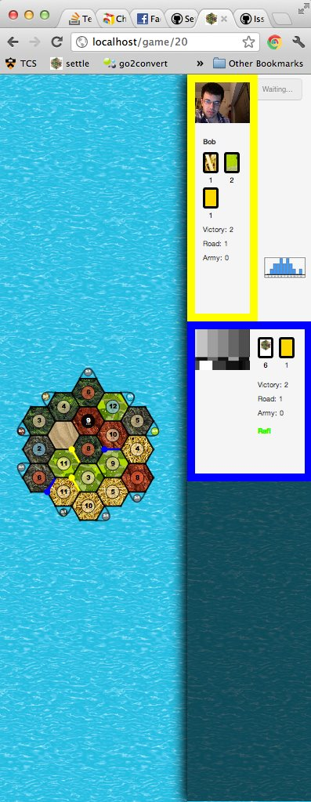
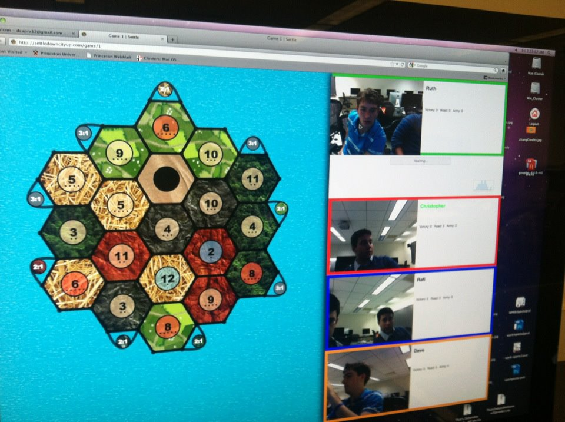

Team Settle Timeline Document
February 22, 2012
Had a meeting to decide on appropriate technologies to use. Decided on SVG for graphics as it made drawing hexes easy, allowed for scalability, texturing and makes clicking events easy. Was thinking about doing 3d graphics, but agreed that it wasn't necessary and that 2d is more intuitive. Decided on Node.js to run the site for its speed, simplicity, and the fact that Dave and Chris are fairly well versed in javascript.
February 28, 2012
Got initial board (with resources and dice rolls) drawn with SVG. It's really modular and the server only needs to call new Board(min, max) to receive a board object. This should be really useful in case we decide to make bigger boards. Also added logic to maximize space, so that tiles are as big as they can be without the board being oversize horizontally or vertically. Initially resource tiles are solid colors and numbers are random.

Initial Board
March 7, 2012
Had a meeting to get caught up and plan out goals for the week. Talked about ways to improve the game. Chris set up an Amazon ec2 server to run the site on.
March 8, 2012
Added image texturing to the tiles.

Textured Board
March 18, 2012
Created a github repository. Added model file Board.js which sets up the Face, Edge, Intersection relationship. Ported code from flat html that was being created in javascript to Jade, which makes things much more modular and just requires objects be passed into the template. Set up the css, and showed hovering over the board.
March 21, 2012
Hooked up the code to the ec2 server. Can now view the board at http://23.21.151.253/board2. Also added Bootstrap player wells to show information and who is in the game.
March 22, 2012
Got socket.io working so that the server and client can now talk to each other. Right now if two users are viewing the board, and one hovers over a tile the other will see messages saying what tile it is. We also implemented a chat box. Cool!
Also updated the layout. Previously player boxes were in each of the corners. Instead moved them all to the right in a list.

Updated layout with bootstrap player wells
March 23, 2012
Finished coding the Intersection objects and their associations. Tiles have a neighbor array indexed by "N", "S", "E", "NE" etc. pointing at their intersections. Still need to show this all on client side. Also update the board to have semi-transparent number tiles.

Semi-transparent number tiles
March 24, 2012
Finished up the model, and coding up Edges and ports. Client can now draw the exact board initialized by the new Board call. Ports are connected to edges. Still deciding the best way to draw ports so that players understand which is which... right now we just draw a circle in the middle of the edge.
March 25, 2012
Created persistant board states. Now everyone at http://21.21.151.253/board/25 will see the same board, and if you are the first to visit that URL, it will create a new board. You can also make up names like http://21.21.151.253/board/teamsettle. Games reside in memory in an associative array. Also moved rendering logic into UIBoard to abstract it. Still can't get image patterns to work on firefox, so currently shows solid colors.
March 26, 2012
Updated ports. Use curve drawing with SVG to create an arc that comes off of the edge, and then placed a circle on that instead of the actual board edge. Looks a lot better!

New ports drawing
March 28, 2012
Had initial meeting with Chris Monsanto to update him on our progress and talk over some problems and discuss technologies. Also updated ports to look more natural.

Another ports update
March 30, 2012
Players can now start the game. Added a waiting popup until 3 players enter the game. Now we just have to allow them to build... Also implemented user colors so that each player can be differentiated, and resource allocation so that on a roll players get the correct resources.
April 1, 2012
Figured out why Firefox wasn't accepting the patterns. Apparently the fill=url(#variable) was being set in css, but needs to be done in the element on Firefox. The joys of web development! We also added seamless copyright-free textures so we don't get problems when textures are tiled. Initial settlement and road placement, and rolling is done too.
April 2, 2012
Added "end turn" logic so that a player rolls, builds or trade and then clicks the end button to make it the next player's turn. Highlight the player's name to show whose turn it is.
April 4, 2011
Players are now able to build settlements, cities, and roads from the client side.
April 5, 2012
Got initial robber working. When a player rolls a 7, they are prompted to click another tile to move it. Tiles with a robber on them won't give out resources. Still need to think about the best way to show this.
April 8, 2012
Added a roll history bar graph to show players the luck distribution of rolls. Popups up from behind the player wells. The bars are proportional to that number's frequency, with the most frequent roll taking up 100% height.
April 9, 2012
Added longest road algorithm which calculate the longest road each player has build. It also handles complications like cycles, mutiple cycles, and roads that get cut off by another player's settlemenets. Also added dice roll animations to the game using openGL, by creating 36 gifs and loading the correct one on each roll.
April 13, 2012
Did some serious coding at the Code@Night. Implemented initial trading system that allows for a two way handshake, with a player offering a trade and the first one to accept that offer gets the trade. Probably will need to do a three way handshake where the initial offerer gets to choose whose accept to accept. Trading done with popups that allow "Accept" "Reject" or "Counter." Players are not allowed to offer a trade they can't offer, and they are not allowed to accept trades that they can't accept. We decided to not have a +- system in order to save space, and instead have a "reset" button if you make while setting up a trade offer.
April 17, 2012
Added port trading, to allow players with settlements or cities on ports to get discounted bank trades. Also added bootstrap popovers and tooltips to make gameplay more intuitive. Started up dev cards. Players can finally build dev cards (such as road building and knights). Still need to show these client side, make sure that you can only play 1 per turn, and that you can't play the card you bought that same turn.
April 18, 2012
Show dev cards client side. Have a working knight as well that can be played before the roll. Victory points are correctly calculated, and you don't see the effects of opponents' victory point dev cards.
April 19, 2012
Now forces player to remove half of their cards if they have over 7 and a 7 rolls. Popup shows how many more cards you need to remove, and allows you finally remove them when you've selected enough. Almost have a full working prototype! Still working on css. Playing with tiling opponents horizontally instead of vertically to maximize space. However this would make the video chat boxes smaller. Also sped up dice rolls because they were taking too long before.
April 26, 2012
Decided on a final layout. Opponent boxes are tiled vertically so that there is a wall of video chats. The players own box is vertical to differentiate it from opponents. Drew up a first page (our dashboard) which shows the current games available and the players in them. It live updates using socket.io. Also got facebook authentication working so that the game can show your profile picture and name. We set up a facebook app (and one for our dev) along with test users. The dashboard also shows your record. We also added new textures for the cards and tiles to make them look more like their supposed resource (like adding sheep to the sheep texture).

Vertical tiling

Initial dashboard
April 27, 2012
Fixed an annoying bug. During building, two socket.io calls were being made for one button click. So if you had 2 roads and 2 brick, and built a road, it would take all of your resources for two roads. Added a BUILD phase to the game, so that only one build can be down per click. We also got opentok working! You can now video chat with player in your game. Each game has its own sessionID you use to subscribe and see everyone elses stream.
May 1, 2012
Gave a lot of thought to ensuring our css worked on all window sizes. Now have dynamic resizing, so that video chats stay the correct size and that cards change sizes as well.
May 2, 2012
Implemented an update popup, so that players see what every player receives after a roll, and what they lose after a build, steal or 7 roll. This keeps players more informed.
May 3, 2012
We now update a player's record after a game is over.
May 4, 2012
Opentok videos are now properly placed in the correct player well. Previously they were just placed as people allowed the flash accept box. Bug fixing: fixed a bug where longest road could be stolen from you if another player built a road for the same length road. Also a bug where two development cards were bought with one click. Also a security bug which would allow players to undisable buttons and get whatever they wanted. It was a poor design decision, and now all actions are checked within the model instead of the client.
May 6, 2012
Forced ports to be 2 edges apart instead of just 1. This makes the board look better. Before most of the ports would be just 1 edge apart, and then all be facing in the same direction. It also now creates a more spread out and fair board. Dice rolls are also now shown next to the player who rolled it. This makes whose turn it is more clear. We also bought the domain "settledowncityup.com" which now goes to our ec2 server. While it's definitely a bit long, the shorter names we had in mind weren't available, and we think that the name is still memorable and relevant.
May 8, 2012
We gave some thought to how to keep players involved and speed up the game. One thing we did was implement a chat style notification, so that if it's your turn to roll, the html title will flash "Your turn" and back to "Settle" until you roll. This makes it easily noticable if the player is on another tab.
May 9, 2012
In preparation for our demo, we built in some cheat codes that will allow us to better showcase our features. For example pressing "B" will give the player a brick card.
May 10, 2012
The page now looks good on even incredibly small windows. Size interpolates smoothly so that at window widths of between 400 and 900 sizes are at intermediary values. There was a problem with the flash allow box that comes for opentok videos, in that if anything appeared on top of it you couldn't click "allow." The box also has a min-width and height. So for smaller resolutions, we pop the box out to the left to ensure that you can still see your name and cards. Then once you press "allow" the actual video chat box will pop-in to the correct size. We agreed on the final colors of red, blue, green and orange as four colors that are different from each other and also fit the color scheme of our board.

Example of css width flexibility
May 11, 2012
After a long night, we finished up the demo today! Everything seemed to go really smoothly. There was a bug where the Bootstrap tooltips were getting removed because hoverOff was never being called, but we'll fix that. We also didn't get a chance to show the full extent of our game -- such as trading, frequency chart and robber -- but the video chat worked and the game looks great! It's been an incredibly challenging project with so many things (some small some large) to figure out, but we're really proud of the finished product.

Finished product at settledowncityup.com!